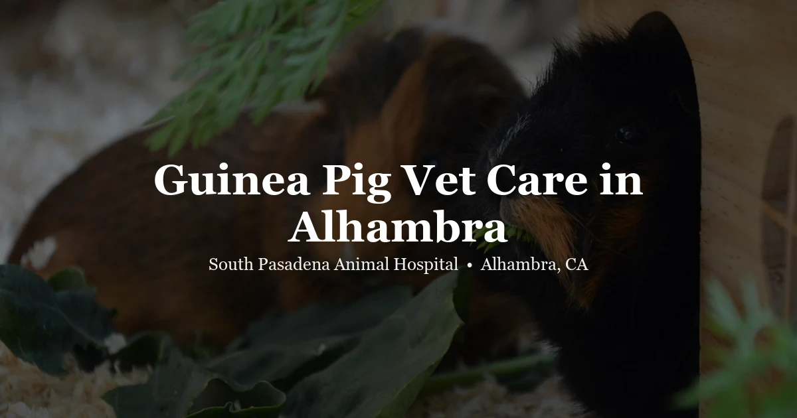

May 4, 2026 · 7 min read
Guinea Pig Vet in Alhambra — What Your Cavy Needs to Stay Healthy

Guinea pigs get sold as starter pets. Easy to care for, no drama, great for kids — that's the pitch. And honestly, there's some truth to it. They're social, hardy little animals that do well with the right setup. But "easy" doesn't mean zero medical needs, and a lot of guinea pig owners find that out the hard way when their pig stops eating and they realize they've never even found a vet who sees them.
We see guinea pigs at South Pasadena Animal Hospital in Alhambra. This is a rundown of the most common health problems we encounter, what to watch for at home, and when to stop waiting and just call us.
The big three — what actually sends guinea pigs to the vet
Dental disease
If there's one condition that catches guinea pig owners off guard, it's dental disease. Guinea pigs are hypsodont — their teeth grow continuously throughout their lives. This is normal. The problem is when that growth gets uneven, when the diet doesn't provide enough wear, or when teeth start developing spurs or angles that trap the tongue or cut into the cheek.
The insidious part: you often can't see it. Guinea pig molars are in the back of the mouth, behind the incisors. The first signs most owners notice are weight loss and drooling. By the time the pig is visibly struggling to eat, the dental disease is usually already pretty advanced. We see this a lot — owners bring in a pig that's lost a third of its body weight and the culprit is molars that have been slowly malocclusing for months.
Treatment involves filing or trimming the affected teeth under anesthesia. We can't reverse the underlying tendency for malocclusion, but we can manage it and keep the animal comfortable. Some pigs need this every few months; others less frequently. Diet helps — unlimited timothy hay is essential because the chewing motion wears the teeth properly. Soft food diets make dental disease worse, not better.
If your guinea pig is drooling, losing weight, taking longer to eat, or dropping food from its mouth — that's dental disease until proven otherwise. Come in.
Respiratory infections
Upper respiratory infections are the other thing we see constantly in guinea pigs. The signs are usually pretty clear: nasal discharge, sneezing, labored breathing, clicking or crackling sounds when you hold the pig close to your ear. Sometimes a mild case looks like just a runny nose. Don't underestimate it.
Guinea pigs are sensitive to temperature changes and drafts. In Southern California that mostly means AC — a cage positioned near a vent, or in a room that gets very cold at night while staying warm in the day. Environmental factors set up respiratory infections; bacteria (usually Bordetella or Streptococcus) do the actual damage.
These infections respond well to antibiotics — but not all antibiotics are safe for guinea pigs. This is critical: certain antibiotics commonly used in dogs and cats (penicillin, amoxicillin, ampicillin, erythromycin) are toxic to guinea pigs because they disrupt gut flora and trigger fatal enterotoxemia. Never give your guinea pig antibiotics prescribed for another animal. Call us and let us prescribe the right drug.
Vitamin C deficiency (scurvy)
Unlike most mammals, guinea pigs can't synthesize their own vitamin C. They need it from their diet every day. If they don't get enough, they develop scurvy — and it looks terrible. Joint pain, lethargy, poor coat condition, loose teeth, slow wound healing, and weight loss.
The most reliable sources: fresh bell pepper (especially red, which is very high in vitamin C), dark leafy greens like romaine and parsley, and a quality pellet diet that contains added vitamin C. A few things to know: vitamin C degrades quickly when exposed to air and light, so pellets sitting in a bag for months lose their potency. Same with water-bottle supplements — the vitamin C oxidizes fast. Fresh food is the most dependable source.
If your guinea pig seems lethargic, is reluctant to move, or has a poor coat and you're not sure about its diet, mention it when you call. Scurvy is very treatable when caught early.
Other things we see regularly
Urinary tract problems
Calcium-heavy diets (often from too much kale, spinach, or calcium-enriched pellets) can contribute to bladder sludge or stones in guinea pigs. Signs include straining to urinate, blood in the urine, wet fur around the genital area, and a hunched posture. Bladder stones sometimes require surgery. Dietary modification is the primary prevention.
Skin issues — mites and ringworm
Mite infestations in guinea pigs can be severe and painful. We see pigs scratching intensely, with hair loss and sometimes open sores from self-trauma. The worst cases involve Trixacarus caviae (sarcoptic mange), which causes extreme discomfort — affected pigs can go into neurological-appearing seizure-like episodes from the itch stimulus. This is treatable but it's not subtle. If your guinea pig is scratching violently or seizing, come in same day.
Ringworm (a fungal infection, despite the name) causes circular patches of hair loss, usually around the face and ears. It's also transmissible to humans, so it's worth addressing promptly.
Ovarian cysts in females
Unspayed female guinea pigs commonly develop ovarian cysts. Signs include bilateral hair loss along the flanks (which looks symmetrical and distinctive), a swollen abdomen, or behavioral changes. Hormone treatment can shrink cysts in some cases; surgical removal is the definitive option. If you have an intact female guinea pig who's losing hair symmetrically, that's likely a cyst — call us.
What "annual wellness exam" actually means for a guinea pig
At a guinea pig wellness visit, we do a hands-on physical: body weight (we track this over time — it's one of our best indicators of health), dental assessment, listening to heart and lungs, abdominal palpation, coat and skin check, and review of diet and housing setup.
We weigh every guinea pig at every visit. Weight loss in these animals is easy to miss visually — their coat hides it. A pig that feels light in your hands has often lost more than owners realize. A scale reading tells us the truth.
We also genuinely use wellness visits to talk through husbandry. A lot of the problems we treat are preventable with the right setup: the right diet (unlimited timothy hay, fresh vegetables daily, quality pellets), the right environment (no drafts, no extreme temperature swings, no wire-bottom cages that injure feet), and social housing (guinea pigs are social animals and do better in pairs or small groups).
Signs to watch for at home — when to call us
Call us the same day if you see:
- Not eating for more than 12–24 hours
- Labored breathing or clicking sounds when breathing
- Straining to urinate, or blood in the urine
- Seizure-like scratching episodes
- Sudden severe lethargy — not moving, not responding normally
- A mass you haven't seen before, or a visibly swollen abdomen
Book a visit within a few days for:
- Weight loss — even gradual
- Drooling or dropping food from the mouth
- Nasal discharge or sneezing lasting more than a day or two
- Symmetrical hair loss along the flanks (in a female)
- Diarrhea lasting more than 24 hours
- Any behavioral change you can't explain — less active, hiding more, not wheek-ing
Guinea pig owners often wait because they're not sure if something is serious. If you're not sure, just call. We'd rather talk you through it over the phone than have you wait too long on something that needed treatment two days ago.
A note on finding exotic animal care in LA
Most general practice vets don't see guinea pigs, or they see them infrequently enough that the experience isn't deep. Finding a vet who knows these animals — their medication sensitivities, their dental anatomy, the specifics of how they hide illness — matters more than it might seem for a small animal. We see exotics regularly as part of our practice. That includes guinea pigs, rabbits, chinchillas, birds, reptiles, and other small mammals. Our exotic exams page has more details about what to expect at a visit.
Questions about guinea pig vet care
How often should guinea pigs see a vet?
Annual wellness exams for guinea pigs under 3 years; twice yearly for older animals. Their lifespans are short — 4–7 years — and conditions like dental disease and urinary problems progress fast. Regular checkups let us catch things early.
What are signs a guinea pig is sick?
Weight loss (often hidden under the coat), reduced appetite, drooling or difficulty eating, labored breathing, nasal discharge, diarrhea or no droppings, lethargy, or a hunched posture. Any of these warrant a call. Guinea pigs deteriorate quickly — don't wait to see if it resolves on its own.
Do guinea pigs need vitamin C?
Yes — guinea pigs can't produce their own. Fresh bell pepper, dark leafy greens, and quality pellets with added vitamin C are the reliable sources. Vitamin C in water degrades too quickly to be dependable. Deficiency causes scurvy — joint pain, loose teeth, poor coat, and weight loss.
Does SPAH see guinea pigs in Alhambra?
Yes. We see guinea pigs as part of our exotic animal practice at 3116 W Main St in Alhambra, CA 91801. Call (626) 441-1314 to book or ask whether we can help with your specific situation.
Can dental disease in guinea pigs be treated?
Dental disease can often be managed but not cured. Overgrown or misaligned molars causing pain can be filed or trimmed under anesthesia. Early intervention is much more effective than waiting. If your guinea pig is losing weight or drooling, come in — don't wait to see if things improve on their own.